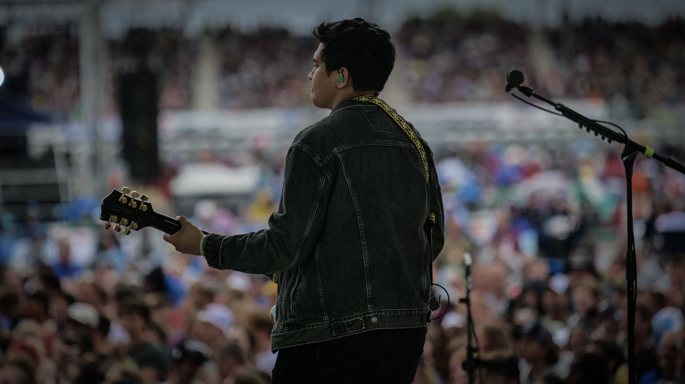

Feel
Play for the emotion of the moment, not just the notes.
The artist / The musician
From the stage to the studio, it's always been about the music—and the people it brings together.
 Jemmy Jems / Behind the music
Jemmy Jems / Behind the music
My career
Jemmuel Magtibay is a guitarist, producer, and music director from Sydney, Australia. Growing up in a musical community at church helped shape his love for making music.
At 16, he played his first paid show in a production of Hairspray. From there, music grew into a career spanning touring, live performances, recording sessions, production, and creative content.
Whether he's tracking a guitar part, developing a sound, or leading musicians onstage, his approach stays grounded in what the song needs.
Explore sessions and production →The approach
Every part, sound, and arrangement should help tell the story. The goal is music that feels as strong as it sounds.
Play for the emotion of the moment, not just the notes.
Listen first, understand the vision, and build together.
Thoughtful tones, arrangements, and musical detail.

Across the stage & studio
Jem's creative journey includes collaborations and projects with artists and musicians such as Cade Foehner, Gabby Barrett, Nigel Hendroff, CityAlight, Luke Munns, Mike Champion, and Chris Sligh.
From supporting other artists to releasing his own material, the common thread is music that connects.
Explore selected releases and credits →Let's make something
Guitar, production, music direction, or a creative collaboration—tell Jem what you're working on.